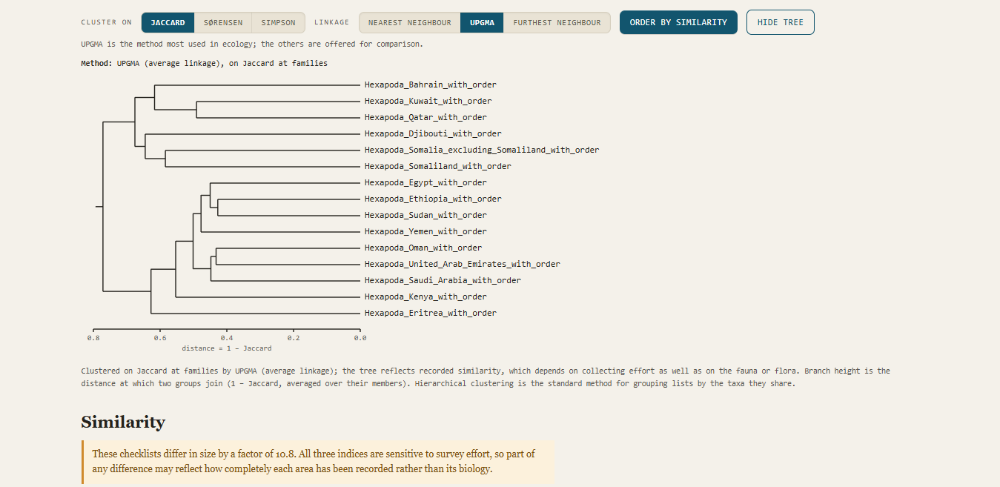

How to use the Checklist Comparer
Checklist Comparer needs a checklist of taxa for each source being compared — an area, a habitat, a host — and, if you want taxon density and the species–area fit, the area of each source.

Your results in just three steps
- Open the comparer and press “Add checklists…”. You can select several files at once or add them one by one.
- Type the size of each area into the Area column, or load an areas file.
- Choose the taxonomic rank you want the Checklist Comparer to use in comparing the lists.
And that is it. The results appear almost immediately — see The results below. Test it with the sample data (spider checklists for 15 countries around the Red Sea, to be posted here shortly) or prepare your own data.
Preparing your data
To calculate the taxonomic similarity of the sources: one CSV file for each list. In Excel, choose File, then Save As, then “CSV UTF-8 (comma delimited)”. The file must contain:
- one or more columns of scientific names;
- each column headed by the name of the rank it holds:
phylum,subphylum,class,order,suborder,superfamily,family,subfamily,tribe,genus,species(the species column may also be headedscientificName,speciesBinomialoracceptedScientificName); - the species column must hold the full two-word name — not the second word alone, and not an abbreviated genus;
- optional: a column headed
GBIF_record_count(orrecord_count) holding the number of records behind each row. It appears in the table as a measure of collecting effort; it is not used in any index.
A very short checklist:
order,family,genus,species
Araneae,Araneidae,Argiope,Argiope trifasciata
Araneae,Salticidae,Evarcha,Evarcha arcuata
Araneae,Lycosidae,Pardosa,Pardosa amentataCaution. Checklist Comparer uses names exactly as you give them. A misspelled name or a synonym counts as a different taxon from the correctly spelled accepted name. The tool flags spellings that look alike, but both may be correct: Hordeum murinum and Hordeum marinum are two different species.
To find misspellings and synonyms, compile your lists into one list and submit it to ChecklistBank (any group) or TNRS (plants). The Checklist Cleaner, the next tool on this site, then applies the corrections to all your lists in one step.
To calculate taxon density and the species–area fit: the comparer needs the area covered by each list. Type the areas into the table after loading, or load an areas file: a CSV with a label column holding the list name, as used for the lists, and an area column. Any unit works, as long as every list uses the same unit.
Then follow the three steps above.
Sampling and size of area
Similarity and richness depend on how well each area has been surveyed and on relative size. An under-collected area will look less similar to everything else.
The richness index allows for area, but the species–area relationship is fitted across the regions loaded, so comparisons between regions that differ greatly in size — Balochistan is 383 times the area of Islamabad Capital Territory — or in collecting intensity should be read with caution.
Only compare lists that cover the same groups of organisms.
What it does not do
It does not validate your names. The comparer uses names exactly as you give them, so a misspelling or an outdated synonym counts as a different taxon. The name check only flags spellings that look alike; it cannot tell which spelling is right. Check your names first:
- TNRS, the Taxonomic Name Resolution Service, for plants;
- ChecklistBank, run by the Catalogue of Life and GBIF, for any group.
It does not work out higher ranks. If your file has no order column, the comparer cannot compare at order level; it will not guess the order from a family name.
The results
As soon as every list has an area, taxon density and the observed ÷ expected value from the species–area fit appear in the table, with an explanation of the fit below it.
Below the table comes a summary of the lists: the number of records in each; records that lack the lowest rank (a genus without a species, an order without lower ranks); which list has the most and the fewest taxa at the chosen rank; the two lists most alike and the two least alike; the total number of taxa across all lists and how many occur in one list only, in two, and so on; and a download of the taxa found in only one list.
Then the clustering: it is easy to explore the effect of different similarity indices and different clustering algorithms, and the explanation below the tree reflects the choices made. One combination is shown at a time; each can be saved as a PNG file.
Then the similarity matrices for the three indices, colour-coded to make patterns clearer. The lists appear in the order they were loaded; change it with the up and down arrows in the first table, or with “Order by similarity”.
Downloads
Every result can be downloaded: all indices, the incidence matrix, the unique taxa and the name check as CSV; the matrices and the tree as PNG; and the whole page as PDF, through your browser’s print window (choose “Save as PDF”).
Get the comparer
To link to the comparer from a paper or a web page, use tools/comparer.html. That link always opens the newest version.